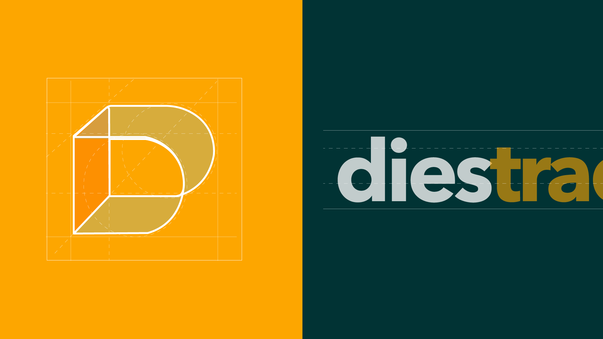
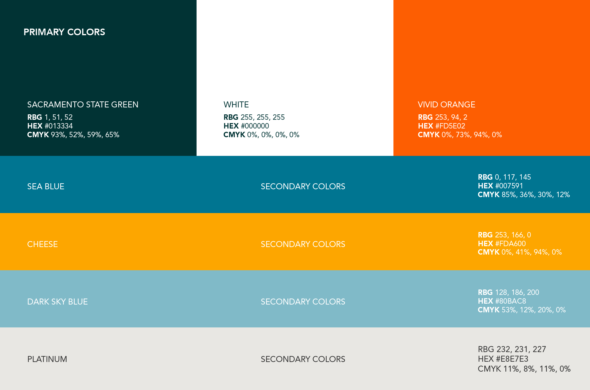
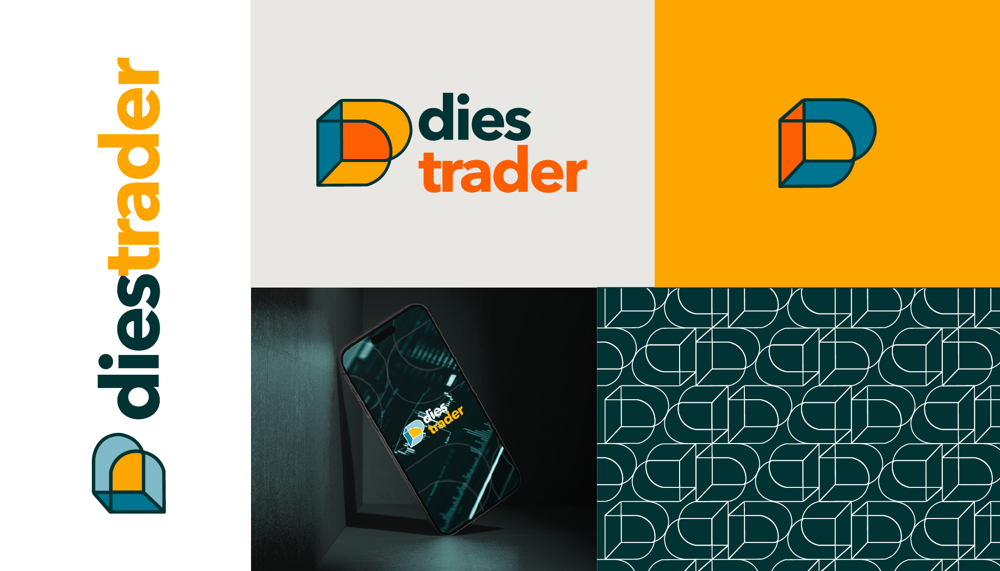
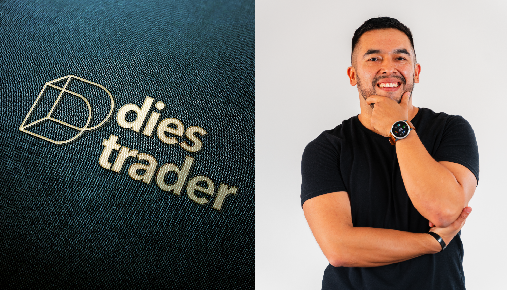
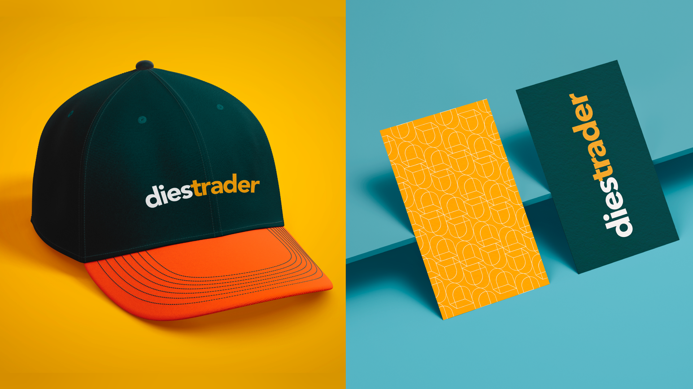
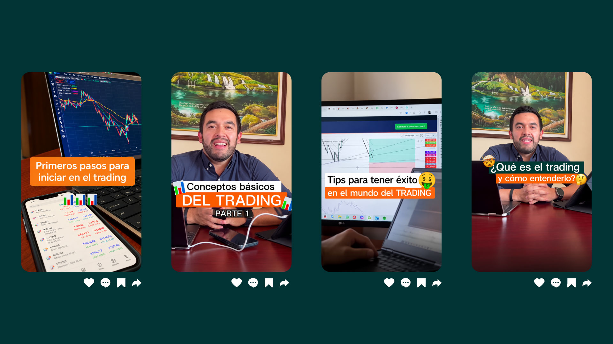

Building a trading brand from strategy to content.
Diestrader was developed as a personal brand focused on trading and financial education. The project started by defining the business and communication objectives, then translated those foundations into a visual identity and a social media strategy for Instagram and TikTok.
It needed a clear way to communicate trading knowledge, build credibility and connect with people interested in learning about financial markets.
I started by defining the audience, their interests, pain points and digital behavior. From there, I developed a brand identity and structured the social media journey around two platforms with different roles: TikTok for discovery and reach, and Instagram for deeper content, engagement and community building.






Performance across 8 pieces of content published during the first month.
Strategy, identity and content came together to create a clear foundation for how Diestrader could communicate across digital platforms.